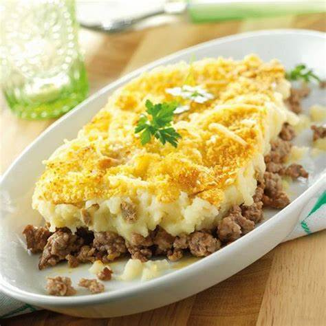
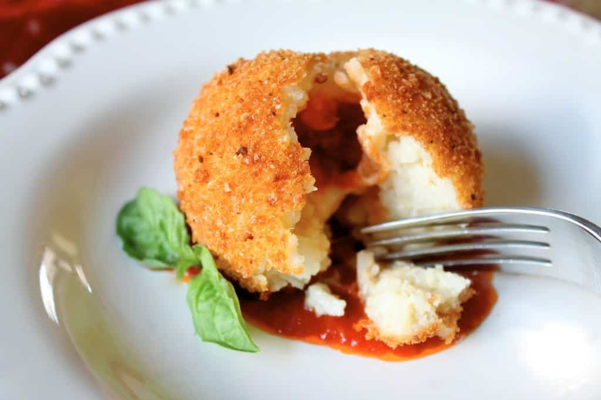

Mezcla los ingredientes de la salsa y ponlos a calentar en una olla de barro.
Escalda en agua el salmón, el rodaballo, el pollo y los langostinos
Cuando la salsa comience a hervir, coloca las verduras de forma ordenada dentro de la olla y añade aparte el tofu.
Colocar tambien el pescado, los langostinos y el pollo
Sírvelo acompañado de la salsa wariponzu.

Ingredientes
800 g de Carne picada de ternera
200 g de Carne picada cerdo
1 Cebolla grande
2 dientes de Ajo
0.5 vaso de Vino blanco
Sal
Pimienta
Queso rallado
Elaboracion
Cocer las patatas con su piel en abundante agua con sal durante unos 20 minutos
Pelar las patatas y machacarlas con ayuda de un prensa patatas o un pasapuré, incluso puedes hacerlo a mano con un tenedor, pero nunca con un robot o batidora.
Corta la mantequilla en dados
Añade el huevo, la leche tibia, una pizca de sal y de pimienta blanca, una pizca de nuez moscada rallada, y mezcla todo bien hasta conseguir la textura de puré deseada. Si ves que te queda muy seco puedes añadir un poquito más de leche o del agua de cocción de las patatas. Reserva.
Picamos fina la cebolla y el ajo y los rehogamos con un poco de aceite en una sartén grande.
Añadimos la carne picada de ternera y cerdo
Cuando esté casi cocinada añadimos medio vaso de vino blanco y dejamos que se evapore el alcohol. Salpimentamos y dejamos unos minutos más hasta que se termine de cocinar.
En una fuente de horno grande cubrimos bien el fondo con la carne picada y, encima, distribuimos el puré de patata. Espolvoreamos con un poquito queso rallado

Ingredientes
400g de arroz redondo
800ml de agua, para cocer el arroz
125g de queso mozarella fresco
El relleno que queramos. Las de la foto, son unas espinacas cocidas
harina, huevo batido y pan rallado, para empanarlas
Aceite
Sal
Elaboracion
Cocemos el arroz. En una cazuela echamos el agua y la llevamos a ebullición. Una vez hierva, echamos una pizca de sal y el arroz.
Apartamos el arroz del fuego y echamos la mozarrella fresca partido en trocitos.
Ahora, cogemos una porción del arroz. Lo aplastamos un poco y ponemos enmedio el relleno que queramos
Cogemos otra porción de arroz del mismo tamaño y lo colocamos encima del relleno. Le damos forma de bola.
Embadurnamos bien la bola por harina, huevo batido y pan rallado. Terminamos de darle la forma
Finalmente freímos en abundante aceite. El aceite debe estar caliente pero no demasiado que, son unas bolas de arroz rellenas bastante gordas